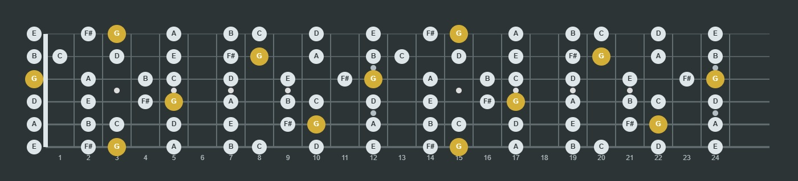
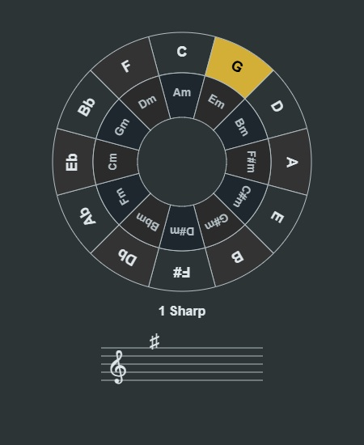
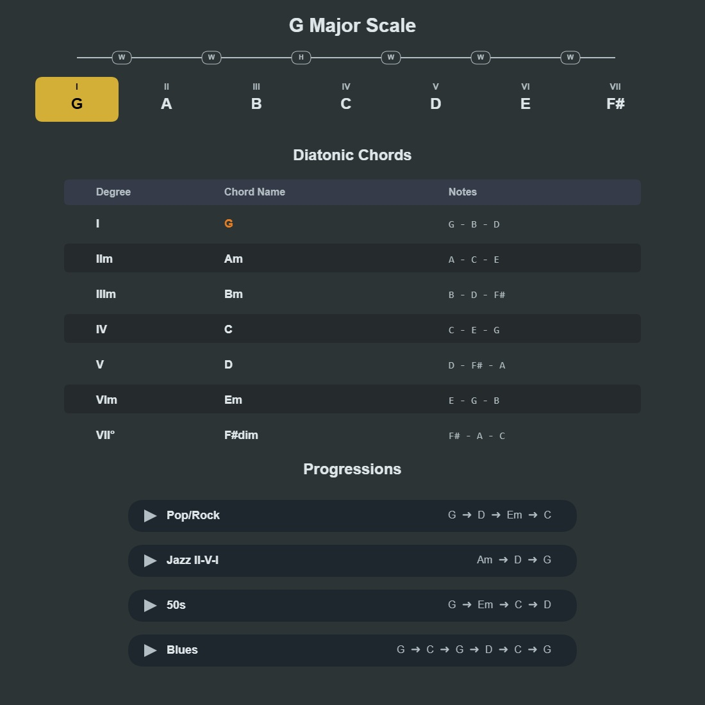
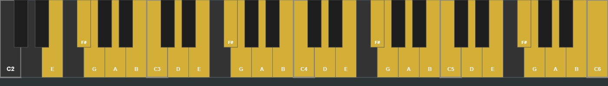
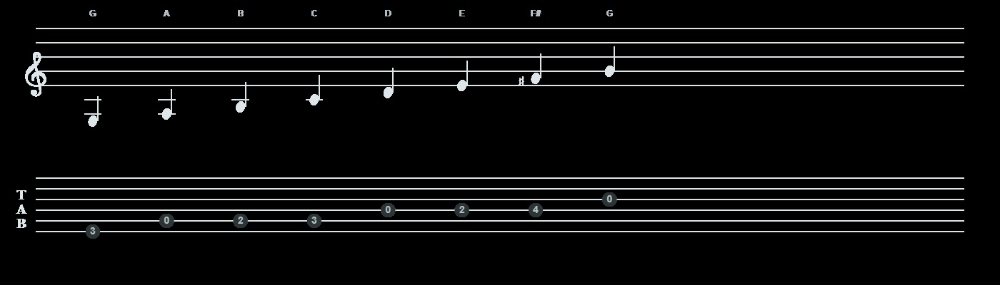
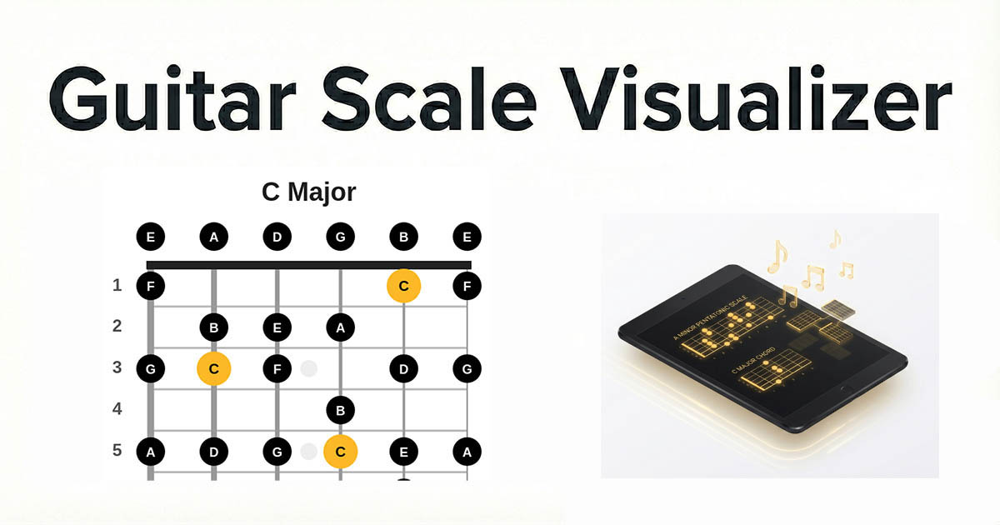

تسلط بر تئوری موسیقی
و فرتبورد گیتار
Master Music Theory
& The Fretboard
تارا گیتارلب، ابزار تعاملی رایگانی برای یادگیری گامها، آکوردها، نتنویسی و پیدا کردن نتها روی گیتار و پیانو است.
Tara GuitarLab is a free interactive tool for learning scales, chords, notation, and note locations across guitar and piano.

امکانات جامع و یکپارچه
Comprehensive & Integrated Features
دایره پنجمها (Circle of Fifths)
Interactive Circle of Fifths
درک روابط هارمونیک هیچگاه تا این حد ساده نبوده است. با کلیک بر روی دایره، گام ماژور و مینور نسبی آن را انتخاب کنید و فوراً سرکلیدها و علامتهای تغییردهنده (دیز و بمل) را روی خطوط حامل مشاهده کنید.
Understanding harmonic relationships has never been easier. Click on the circle to select Major and relative Minor keys, and instantly view their key signatures on the standard staff.

تئوری، آکوردها و توالیها
Theory, Chords & Progressions
تولید خودکار درجات گام، فرمولهای فاصلهای و آکوردهای دیاتونیک. توالیهای معروف آکورد (مانند Pop، Jazz، Blues) را در گام انتخابی کشف کنید. با کلیک روی هر آکورد، صدای آن را بشنوید و الگوهای آن را روی دستهی گیتار ببینید.
Auto-generate scale degrees, interval formulas, and diatonic chords. Explore popular chord progressions (Pop, Jazz, Blues) in your chosen key. Click any chord to hear it and see its voicings mapped out.

تطبیق با کلاویه پیانو
Piano Keyboard Reference
ارتباط تصویری مستقیم بین نتهای روی فرتبورد و کلاویههای پیانو. با نگهداشتن موس روی نتهای گیتار، معادل آنها را روی پیانو ببینید و درک عمیقتری از ساختار نتها پیدا کنید.
Establish a direct visual connection between fretboard positions and piano keys. Hover over notes on the guitar to see their exact counterparts illuminated on the piano, deepening your structural understanding.

نتخوانی استاندارد و تبلچر
Standard Notation & Tablature
گامها و آکوردها به صورت همزمان روی خطوط حامل استاندارد و تبلچر (TAB) گیتار ترسیم میشوند. این ابزار کمک بزرگی برای تقویت مهارت نتخوانی و پیدا کردن جایگاه نتها روی دستهی ساز است.
Scales and chords are simultaneously drawn on standard musical staves and guitar TABs. This visual aid bridges the gap between reading sheet music and fretboard navigation.

درس و تمرین تعاملی موسیقی
Interactive Music Theory Lessons
با راهنمای آموزشی تارا، مفاهیمی مانند فاصلهها، گامها، درجات، آکوردهای دیاتونیک و دایره پنجمها را یاد بگیرید و سپس با تمرینهای فرتبورد، تشخیص شنیداری و میکروفون آنها را به کار ببرید.
Learn intervals, scales, scale degrees, diatonic chords, and the Circle of Fifths, then apply them with fretboard, ear-training, and microphone exercises.
رفتن به درسها و تمرینها ← Explore lessons and practice →
جعبه ابزار داخلی
Built-in Utilities
پخش صوتی دقیق
Accurate Audio Playback
با کلیک روی هر نت یا آکورد، صدای سنتز شدهی دقیق آن را بشنوید.
Click any note or chord to hear its precise synthesized audio output.
تیونر کروماتیک
Chromatic Tuner
گیتار خود را به کمک میکروفون دستگاه، مستقیماً در مرورگر کوک کنید.
Tune your guitar directly in the browser using your device's microphone.
مترونوم هوشمند
Smart Metronome
تنظیم تمپو (BPM) با بازخورد دیداری و شنیداری برای تمرین ریتم.
Adjustable BPM with visual and audio feedback for rhythm practice.
خروجی PDF جزوه
PDF Export
با یک کلیک، تمام نمودارها و آکوردها را به صورت یک جزوه PDF ذخیره کنید.
Export all current diagrams and charts into a printable PDF booklet with one click.
آماده ارتقای دانش موسیقی خود هستید؟
Ready to elevate your music theory?
تارا کاملاً رایگان، متنباز و اجرا شونده روی مرورگر است. نیازی به نصب هیچ نرمافزاری نیست.
Tara is completely free, open-source, and runs directly in your browser. No installation required.
ورود به آزمایشگاه Enter the Lab